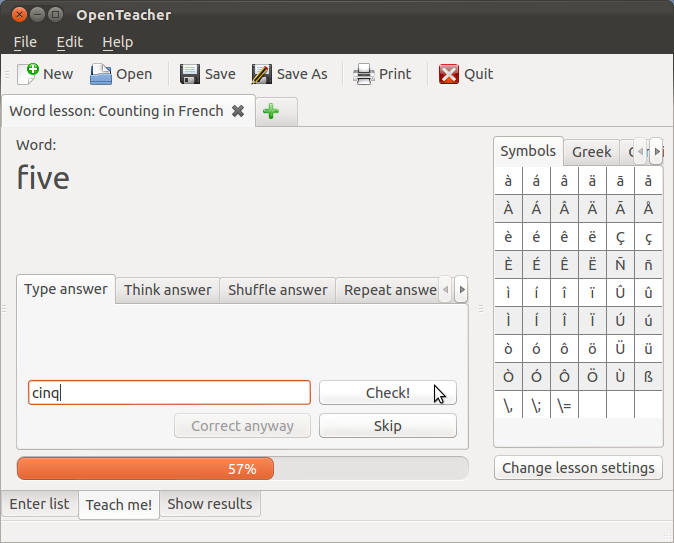

Using OpenTeacher: A Quick Start
This quick start guide shows you how to do a simple self-test using OpenTeacher. We're going to learn counting to ten in French today! For this example we are assuming that you already know English, and you want to learn French.
The screenshots are all taken in Ubuntu, but this should all work exactly the same in Windows and Mac OS X.
- Start OpenTeacher and click the 'Create words lesson' button to make a new word lesson.

- Enter a title for the word list you are going to enter. Also
enter the known language, which, in our case, is English, and the
foreign language (the language you want to learn), which, in our case,
is French.
Then enter all words you want to learn in the words table, you can go to the next question or answer column by pressing tab or '='. See the screenshot for an example.

- Click the 'Teach me!' tab on the bottom to start the test.
You can now specify in what way you want OpenTeacher to question you,
but the defaults will do in our case. So, we click the 'I'm ready, start the lesson!'
button.
A word will now be asked to you in your own language, and you'll have to type the translation of it in the text field. When you have entered the translation, press Enter on your keyboard, or click 'Check!'

If you entered the right translation, the next question will be asked to you. If you did not enter the right translation, OpenTeacher will show you the correct answer, and the difference from your answer.

-
Once the test is completed, OpenTeacher will tell you if you did well by giving you a note.